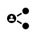

The "cupcakes" game
The cupcake game is a simplification of the Naval Battle game. Now, instead of ships, we have trays made up of a set of 4 plates of 1 muffin, 3 plates of 2 muffins, 2 plates of 3 muffins and 1 plate of 4 muffins. These are only arranged horizontally.
Observe the following example.
The board has a dimension of 10 x 10.
1 Game structure
This game already has some complexity, so it will be useful to use decomposition to better structure the game into sub-problems:
1. Create the game board: The board is created as a matrix of 10x10 values (not changeable). Values are generated randomly, representing the cupcake dishes with the following numbers:
· 0, empty;
· 1 a 4 - cupcake belonging to a plate with 1, 2, 3 or 4 muffins.
2. Drqwing the UI: In this sub-problem, the UI (User Interface) is designed. This consists of two boards:
· The player's board (the one on the left in the figure below), where his cupcakes and opponent's "shots" are displayed;
· The opponent's board, in this case will be the computer, (the one on the right in the figure below), where the cupcakes are displayed as they are discovered and the "shots" missed by the player.
And of course, the logic of the p5 module:
3. setup(): This sub-problem will focus on creating the two boards and deciding the player who starts the game.
4. draw(): The game loop. Checks who plays, executes the play using game logic and validates if the game is over and who is the winner.
5. mouse_pressed(): The player will interact through the mouse, pressing on the corresponding grid.
2 Global definitions
To keep the game configurable, the following constants were defined, right after the import of the p5 and random modules:
from p5 import *
import random
# definicoes
LARGURA = 800 # largura da janela grafica
ALTURA = 400 # altura da janela grafica
LINHAS = 10 # numero de linhas de cada um dos tabuleiros
COLUNAS = 10 # numero de colunas de cada um dos tabuleiros
FORNADA = ((1,4), (2, 3), (3,2), (4, 1)) # 1 de 4, 2 de 3, ...
MAX_TENTATIVAS = 50 # numero máximo de tentativas para colocar, aleatoriamente, os queques em cada um dos tabuleiros
|
|
Notice how the literal FORNADA is created. It is a tuple with 4 elements. And each of these elements is also a tuple with two values. We can actually visualize this structure as follows:
It is a constant matrix. How to access a particular element directly? FORNADA [2][1] What is the value returned by this expression? |
These settings make it possible to make the size of the window and the game board more flexible, as well as the number and type of cupcake plates on the board.
In p5, it is usually necessary to also create some global variables...
# variáveis globais
agora_joga = 0
The player who plays each turn (0 - computer; 1 - human).
And then the board, the list of shots and the number of muffins not yet eaten / found, either by the human player or the computer:
# tabuleiro, lista de tiros e queques não comidos - do jogador humano
tab_humano = None
lista_humano_tiros = []
quequesH_nao_comidos = 0
# tabuleiro, lista de tiros e queques não comidos - do computador
tab_computador = None
lista_computador_tiros = []
quequesC_nao_comidos = 0
Variables quequesC_nao_comidos and quequesH_nao_comidos determine the number of cupcakes left to finish the game.
|
|
Why is it that in p5 it is necessary to create all these global variables? |
3 Creating the board
The board consists of a matrix, which is typically formed by a vector of vectors. In Pyhon it is implemented through a tuple with 10 lines, each line being a tuple of 10 values. Since tuples are immutable, they define a tray of constant values. For this reason, shots will not be able to directly change the board, being stored in a list for later being displayed.
Function cria_tabuleiro(lin, col, fornada) has 3 parameters:
· lin, the number of lines on the board (integer);
· colunas, the number of columns on the board (integer);
· fornada, a matrix with the configuration of the cupcake plates to be placed on the tray.
The algorithm consists of 2 steps:
1. Create an empty board;
2. Place the plates with the muffins on the board at random.
3.1 Create an empty board
In this step of the algorithm, a list of 10 tuples is created, each with 10 zeros.
# construtor - cria tabuleiro com dimensão lin x col
def cria_tabuleiro(lin, col, fornada):
# cria um tabuleiro inicial como uma lista de linhas de 0s (vazio)
tab = []
for i in range(lin):
tab.append((0,)*col) # coloca linha de 0s
|
|
Also, in the previous section we mentioned that our board is a tuple ... But although the goal is to have a final board that is a tuple, for its construction it is convenient to use a list first, because it is changeable. What does the following statement? (0,)*col Creates a tuple with as many 0 as the col variable. That is, if col is 10, it creates the tuple: (0,0,0,0,0,0,0,0,0,0)
|
|
|
Something to think about ... A tuple with only one element is represented with a comma: (0,) Because if you use the following expression you get, not a tuple, but an integer (the number zero). (0) In reality, it is not even necessary to place the parentheses. Just define the sequence of tuple values separated only by commas: tuplo = 0, 0, 0, 0, 0, 0, 0, 0, 0, 0
|
3.2 Place the muffin plates on the tray
The algorithm goes through the tuple that defines the types of dishes to be placed (the FORNADA) and, for each dish of that type, tries to place it on the board in a random position.
In this step of the algorithm, which is random, it may not be possible to place all the dishes on the board. It depends a little on the "arrangement" of these. For that, a maximum of 50 attempts was defined. If it is not possible to place any of the dishes, the function returns False.
# para cada tipo de prato
for n, comp in fornada:
# para cada numero de pratos
for i in range(n): # lado esquerdo do par e' a quantidade
# coloca os queques no tabuleiro
for i in range(MAX_TENTATIVAS):
# determina coordenadas aleatorias
l = random.randint(0, lin-1)
c = random.randint(0, col-comp-1)
linha = tab[l]
# verifica se há espaço livre na linha
if linha[c:c+comp].count(0) == comp:
tab[l] = linha[:c] + (comp, )*comp + linha[c+comp:]
break
else:
# nao e' possivel criar o prato no tabuleiro
return False
return tuple(tab)
|
|
The tuple conversion function (tuple) converts the board from a list to a tuple. From this conversion, the board is immutable.
What advantages could creating the board with lists only? Something to think about as you read the next chapter. |
4 User interface
The user interface is graphical, representing two boards, side by side.

The board on the left is that of the human player, where he visualizes the placement of his cupcakes and the shots taken by the opponent.
The board on the right side shows the cupcakes guessed by the human player and the false shots.
Function desenhaUI() draws in the graphical window p5, following the following algorithm:
def desenhaUI():
global tab_humano, lista_humano_tiros
1. Definition of grid dimensions and origins of the boards in the window: (ox1, oy) and (ox2, oy) draw squares of the two boards;
quadricula = min( (LARGURA-40) // COLUNAS // 2, (ALTURA -50) // LINHAS )
ox1 = (LARGURA - 2 * COLUNAS * quadricula) // 2 -20
ox2 = LARGURA // 2 + 20
oy = (ALTURA - LINHAS * quadricula) // 2
2. Draw the squares of the two boards;
fill("white")
rect((ox1, oy), quadricula * COLUNAS, quadricula* LINHAS)
rect((ox2, oy), quadricula * COLUNAS, quadricula* LINHAS)
for i in range(1,LINHAS):
line((ox1+i*quadricula, oy), \
(ox1+i*quadricula, oy + LINHAS * quadricula))
line((ox2+i*quadricula, oy), \
(ox2+i*quadricula, oy + LINHAS * quadricula))
for i in range(1,COLUNAS):
line((ox1, oy + i * quadricula), \
(ox1 + COLUNAS * quadricula, oy + i * quadricula))
line((ox2, oy + i * quadricula), \
(ox2 + COLUNAS * quadricula, oy + i * quadricula))
3. Draw the player's muffins as yellow circles on the left board;
# desenha os queques do jogador
ponto = (ox1 + quadricula//2, oy + quadricula//2)
for lin in tab_humano:
for queque in lin:
if queque > 0:
fill("yellow")
circle(ponto, quadricula//2)
ponto = move_ponto(ponto, quadricula, 0)
ponto = move_ponto(ponto, -COLUNAS*quadricula, quadricula)
4. Draw the player's shots on the right board as red dots if he hits, or red crosses if he misses;
# desenha os tiros do jogador
for lin, col, tiro in lista_humano_tiros:
if tiro > 0:
ponto = (ox2 + quadricula//2 + col*quadricula, \
oy + quadricula//2 + lin*quadricula)
fill("red")
circle(ponto, quadricula//2)
else:
ponto = (ox2 + col*quadricula, oy + lin*quadricula)
stroke("red")
line(ponto, move_ponto(ponto,quadricula, quadricula))
line(move_ponto(ponto, 0, quadricula), \
move_ponto(ponto,quadricula, 0))
stroke("black")
5. Draw computer shots as red crosses on the left board.
# desenha os tiros do computador
for lin, col, tiro in lista_computador_tiros:
ponto = (ox1 + lin*quadricula, oy + col*quadricula)
stroke("red")
line(ponto, move_ponto(ponto,quadricula, quadricula))
line(move_ponto(ponto, 0, quadricula), move_ponto(ponto,quadricula, 0))
stroke("black")
An auxiliary function was used to calculate the displacement of points:
# desloca um ponto
def move_ponto(ponto, x, y):
return (ponto[0]+x, ponto[1]+y)
5 Game setup
Function setup() creates the graphic window with the two trays and updates the number of cupcakes present on these trays, using the auxiliary function soma_queques().
At the end, it determines, randomly, who should start the game, using the global variable agora_joga.
# inicialização do jogo
def setup():
global tab_computador, tab_humano, \
quequesC_nao_comidos, quequesH_nao_comidos, jogador
# dimensão da janela
size(LARGURA, ALTURA)
title("Jogo dos queques")
# cria os tabuleiros com os queques
tab_humano = cria_tabuleiro(LINHAS, COLUNAS, TABULEIRO)
tab_computador = cria_tabuleiro(LINHAS, COLUNAS, TABULEIRO)
if not tab_computador or not tab_humano:
print("Não foi possível criar o tabuleiro")
exit()
else:
quequesH_nao_comidos = quequesC_nao_comidos = soma_queques(FORNADA)
# determina quem joga primeiro (computador - 0 / humano - 1)
jogador = random.randint(0,1)
The auxiliary function soma_queques() returns the sum of the products between the number of plates (n) and the number of muffins (q) in each of these plates. The value of this sum is, after all, the total number of cupcakes contained in FORNADA:
def soma_queques(fornada):
soma = 0
for n, q in fornada:
soma += n*q
return soma
6 The game loop
The game loop is implemented in p5 with the draw() function, following the algorithm:
1. Draw the player's UI;
2. If the computer is playing, it determines a random "shoot" (the human player plays in the event of the mouse);
· If the computer fails the shoot, the turn changes to the human player;
3. Checks if any player has won.
# ciclo de jogo
def draw():
global tab_computador, tab_humano, quequesC, quequesH, jogador, \
lista_humano_tiros, lista_computador_tiros
# desenha o interface do jogador
desenhaUI()
# jogada do computador
if jogador == 0:
# tiro aleatório
l = random.randint(0, LINHAS-1)
c = random.randint(0, COLUNAS-1)
tiro = tab_humano[l][c]
lista_computador_tiros.append((l, c, tiro))
#print('Jogada do computador: '+ str(l) + " : " + str(c))
# se falhou muda de jogador
if tiro == 0:
jogador = 1 # passa para o jogador humano
else:
quequesH -= 1
# verifica se alguem ganhou
if quequesC == 0:
print("Parabens! É o vencedor.")
exit()
elif quequesH == 0:
print("Perdeu... O computador venceu.")
exit()
7 Mouse interaction
In this game, we chose to use the mouse to directly select the grid in order to make the interaction more intuitive. In p5 the function that receives the events of pressing the mouse is mouse_pressed().
The algorithm is simple:
1. If the human player is playing, determines the square selected using the mouse coordinates (mouse_x, mouse_y)
2. Perform the player's shot and check if he hit any cupcake ...
3. If you didn't get it right, then switch to the other player;
4. If you got it right, then decrease the number of muffins left to guess.
# evento do rato - jogada do jogador humano
def mouse_pressed():
global tab_computador, lista_humano_tiros, jogador, quequesC
# jogada do humano
if jogador == 1:
tiro = get_rato(mouse_x, mouse_y)
if tiro:
l = tiro[0]
c = tiro[1]
alvo = tab_computador[l][c]
lista_humano_tiros.append((l,c, alvo))
# se falhou muda de jogador
if alvo == 0:
jogador = 0 # passa para o jogador computador
else:
quequesC -= 1
An auxiliary function was used to determine the square selected with the mouse coordinates.
def get_rato(x, y):
quadricula = min( (LARGURA-40) // COLUNAS // 2, (ALTURA -50) // LINHAS )
ox2 = LARGURA // 2 + 20
oy = (ALTURA - LINHAS * quadricula) // 2
c = (x-ox2) // quadricula
l = (y-oy) // quadricula
if l>=0 and l<LINHAS and c>=0 and c<COLUNAS:
return (l, c)
else:
return False
The function returns a pair of coordinates (row, column) if the mouse was pressed inside the right grid, or False otherwise.
Don't forget to add the instruction that executes p5 at the end.
if __name__ == '__main__':
run()
8 Final Challenge
In this solution, the restriction was made that the trays were only horizontal. Add the possibility that the tray also has vertical trays. And the impossibility of the boards being together, forcing at least one square to separate each two boards.
|
 |
Share your game!
|